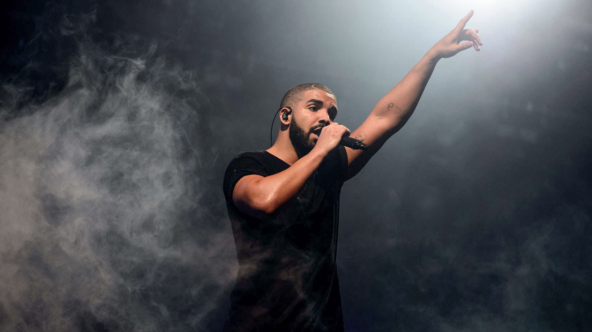
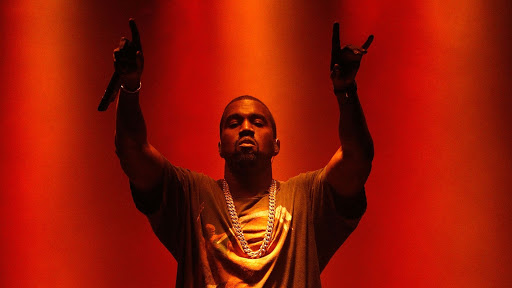
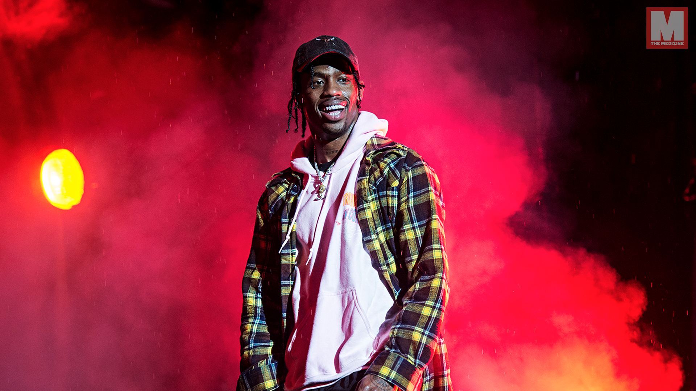

Mac Miller
|

Drake
|
|---|---|
|

Kanye West
|

Travis $cott
|
|
Don Toliver
|

PartyNextDoor
|
About Hip-Hop Music
Hip hop as both a musical genre and a culture was formed during the 1970s when block parties became increasingly popular in New York City, particularly among African-American youth residing in the Bronx. At block parties DJs played percussive breaks of popular songs using two turntables and a DJ mixer to be able to play breaks from two copies of the same record, alternating from one to the other and extending the "break". Hip hop's early evolution occurred as sampling technology and drum machines became widely available and affordable. Turntablist techniques such as scratching and beatmatching developed along with the breaks and Jamaican toasting, a chanting vocal style, was used over the beats. Rapping developed as a vocal style in which the artist speaks or chants along rhythmically with an instrumental or synthesized beat.
Hip hop music was not officially recorded for play on radio or television until 1979, largely due to poverty during the genre's birth and lack of acceptance outside ghetto neighborhoods. Old school hip hop was the first mainstream wave of the genre, marked by its disco influence and party-oriented lyrics. The 1980s marked the diversification of hip hop as the genre developed more complex styles and spread around the world. New school hip hop was the genre's second wave, marked by its electro sound, and led into Golden age hip hop, an innovative period between the mid-1980s and mid-1990s. The gangsta rap subgenre, focused on the violent lifestyles and impoverished conditions of inner-city African-American youth, gained popularity at this time. West Coast hip hop was dominated by G-funk in the early-mid 1990s, while East Coast hip hop was dominated by jazz rap, alternative hip hop, and hardcore rap. Hip hop continued to diversify at this time with other regional styles emerging, such as Southern rap and Atlanta hip hop. Hip hop became a best-selling genre in the mid-1990s and the top-selling music genre by 1999.
The popularity of hip hop music continued through the late 1990s to mid-2000s with hip hop influences increasingly finding their way into other genres of popular music, such as neo soul, nu metal, and R&B. The United States also saw the success of regional styles such as crunk, a Southern genre that emphasized the beats and music more than the lyrics, and alternative hip hop began to secure a place in the mainstream, due in part to the crossover success of its artists. During the late 2000s and early 2010s "blog era", rappers were able to build up a following through online methods of music distribution, such as social media and blogs, and mainstream hip hop took on a more melodic, sensitive direction following the commercial decline of gangsta rap. The trap and mumble rap subgenres have become the most popular form of hip hop during the mid-late 2010s and early 2020s. In 2017, rock music was usurped by hip hop as the most popular genre in the United States.